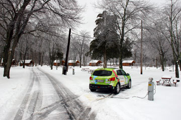
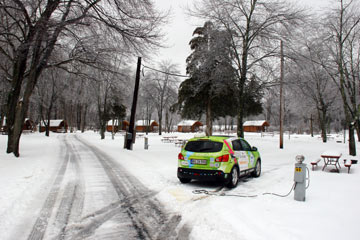
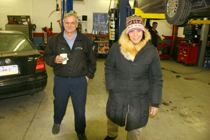

Look, Hudson River! And the skyscrapers of Manhattan! We had to shout our joy. Green Car had taken us all the way across America from San Francisco to New York, more than 7000 kilometers. We finally stopped at the corner of Central Park and Harlem, where we had friends waiting for us. Rita gave us a warm welcome and showed us the grand view from their 9th floor apartment. Later we parked Green Car at the local gas-station. Five men had to move a Pepsi-wending machine to get Green Car hooked up. When all was done it was time for a glass of red wine and good long talk about life in this city so unlike all the other cities we have seen on our tour. We looked out the window on all the lights and just felt so happy - we made it!
Nina and Hjalte
 

We talked to journalist Bill Huges from the Bloomsburg Press, and he did an interview and took some photos. We had to dig Green Car out of the snow next to the White Birch Bed and Breakfast. Snow became sleet and freezing rain, the worst weather so far. As the rain froze over on the windscreen, Green Car sloshed through wet snow and salt. In the Delaware Water Gap we found an open KOA camp-site and got Green Car hooked up. For us there was no lunch just some chips and sweets. In the company of a worn pool table and two tired pin-ball machines we worked on our blog for some hours. A big TV was tuned to Weather Channel and predicted all kinds of icy rain, frozen roads, sleet and fog for the rest of the day.
Nina


I, Green Car, can't stand it much more! I am covered by road-salt. It itches all over my body, under the belly, on my rear end and all over. And when Nina og Hjalte touch me they get all whitish clothes. I am driving soft and silent like an angel, and then they keep talking about I have never been so dirty. Luckily I still got my thick rubbers and stand firmly in ice and snow. Nina on the other hand was just about to fall over yesterday. Suddenly she skated away on one leg with flapping arms. The rubber under her shoes is deplorable, she really ought to change to Continental tires. Hjalte catched her computer in mid-air and she regained balance. To walk on your own legs is not popular in the US. Here you take the car.
Greetings from Green Car

The distance an ordinary car can cover in a couple of hours Green Car will need a full day to drive. Like the early polar explorers we struggle ahead mile by mile with frozen toes. We almost can´t understand why we are so slow moving. I guess you have to try it to understand it. Power last night was only 110V so Green Car was only half charged as we set out in the morning. The last 10% of the morning power was spent searching for more power around Milton in Pennsylvania. We found it in Jake´s car-repair shop. His outlet was a kind of 100 amp socket we hadn´t seen before so Hjalte had to combine some loose legs and grind down one of them to get Green Car charging. We were eating lunch and apple-pie in The Arrowhead Restaurant for 4 hours until Green Car is ready for the next stint on the Interstate 80. In front of the windows the big Susquehanna flows by. The whole area, the restaurant and the car shop was flooded in December and it has been like that almost every year. But nobody moves. The Arrowhead has been here for 60 years and survived 20 floods.
Nina and Hjalte


Icy morning. We drive east along Interstate 80 through the vast forests and low mountains of Pennsylvania. White and grey and blue rips in the clouds. It is a Nordic landscape. We have the flashers turned on and the 18-wheelers blast past us. On the radio advertisements and religious country-music. In the middle of the day we eat at a Buck-Horn restaurant decorated with interesting historic photos from the area. At 5 o´clock we unplug Green Car from the truck-repair shop and set out on the second shift of the day. It is dark now. The challenge is to get as far as possible. Some hours later we leave the interstate still with a good portion of power left to reach a motel in Lock Haven listed on our GPS. As soon as we see the building we know we can not get power to Green Car - the motel is like a fortress and worst: central air-condition with sealed installations. The next address turn out to be a residential house. And a bed & breakfast only has an answering machine on. The next motel has an oil heater and no 220V. On the last % of power we drive to a motel back on the Interstate. But again - no luck - there is only 110V. Now we have to stay. Green Car can no more. We have not been prepared for four missed shots!
Nina and Hjalte

Most electric car-owners charge their car at home and only drive to work and the shopping-mall. That is easy and convenient. To go far in an EV is all about finding electricity outside home, and that is not always easy. Oddly as there is electricity everywhere. But there are always circumstances. So today we have spent four hours in a large truckers gift shop and restaurant while Green Car got power from the clothes-dryer out under the emergency-exit door. And at the end of the day we found a motel with a very friendly girl that gave us a room with an outlet for Green Car for free and a nice warm room for us. Sometimes we are really lucky. We are getting closer to New York...
Nina


When we left the historic B&B I had put on angora-socks and leg-warmers made by old socks. On the floor of the car I put a rolled-up camping-mattress and inside a dawn-jacket and a fleece-jacket I had two bottles of hot water. When I put my feet down there they kept warm - almost. At lunch time we tramped through piles of snow on the side-walk-free roads to get to a thrift-store and a diner. I discovered there were holes in my shoes and my socks got wet. In the evening we were lucky to get a good room in one of the small Indian-run motels in Sharon, Pennsylvania. Green Car got its own plug on the outside of the building so we had heat in our room in the frosty night. Good for my creaking cough and Hjalte´s icy toes.
Nina

Coocooned in our dawn sleeping bags we lay waiting for the morning to come. Six o'clock Hjalte got up and stirred the motel-host and she flipped the circuit-breaker on so Green Car could charge again. It froze hard and one of the battery-cells was under 32F/0 C. Breakfast in the deep-frozen room had to be what we got in our food-box: Oats with a little honey and hot Nescafe poured over. Actually OK! In these low temperatures Green Car do not go so far. In minus 10 C not more than 1,2 km/ % charge. Luckily we found a company in Clyde repairing RVs with a 220V outlet. Green Car got new power and we had lunch in a chain-restaurant and finally our feet thawed. In the evening we came to a hotel in Oberlin, Ohio where there was no 220V outlet. We then had to go to a Bed & Breakfast on the very last drop of electrons. Much anxiety, but it all ended well with Green Car in a garage with power from a clothes dryer and a fine warm room with an antique bed for us. And a great history: the house was built in 1830 and became a a "station on the underground railroad" where run-away slaves was hidden until they could escape to Canada. We even saw the secret room under the floor where they had to wait.
Nina and Hjalte


A TV-team from NBC-Sport filmed us and Green Car! With a little luck they do a one minute story about us in their big reportage from the 2011 Detroit Auto Show to be aired on Jan 30, 12:30. When it was over and Green Car was fully charged we got a warm farewell from our friends and hosts Linda and Bruce. Snow was falling as we left through dismal dark Detroit. To save energy we drove without heat in the car. A sunset never tWe disconnected the heater in the room and plugged in Green Car with the cord running out through the slightly open door. o end put the horizon on fire behind the winter-dark landscape. When Green Car was running out of power we had no motel nearby. So quite contrary to our principles we had to back-track 20 km and just made it across empty frozen back-roads. I had an old bit of bread and some almonds for dinner. And during the night happened what shouldn't happen: the motel circuit breaker flipped while we slept and Green Car was without power in minus 9 C.
Nina
The North American International Auto Show gave us a lot of exposure - thank you guys! It was great to share our adventure with you and the audience at our press conference. The pictures from the Gobi desert gave an idea of what we have been through and what our Green Car has braved. At the Venturi-stand we met Xavier Chevrin who went from Shanghai to Paris with his wife Géraldine Gabin in a Citroen EV . EV-expeditions create modern day adventures. We hope to meet them in Monaco in April at the Monte Carlo Rally for Electric Cars. Michigan gave us a taste of snowstorm when we drove back home to our dear hosts Bruce and Linda from the Electro Auto Association in Saline. You can check out some of the press-coverage we got here:
Detroit Free Press: http://www.freep.com/article/20110112/BUSINESS01/101120373/-1/BLOG14/x26template/x3drss/x26mime/x3dxml/Around-world-in-11-months-for-Danish-Moto-Mundo-duo
WOMC Radio: http://womc.radio.com/tag/moto-mundo/
SATnews Daily: http://www.satnews.com/cgi-bin/story.cgi?number=1714272154
AutoBlog Green: http://green.autoblog.com/2010/12/21/moto-mundos-nissan-qashqai-electric-detroit-auto-show/
NextCars.net: http://www.nextcars.net/moto-mundos-nissan-qashqai-electric-travels-around-the-world-to-visit-detroit-auto-show/
Engadget: http://www.engadget.com/2010/12/23/moto-mundo-world-tour-pushes-all-electric-nissan-qashqai-to-its/